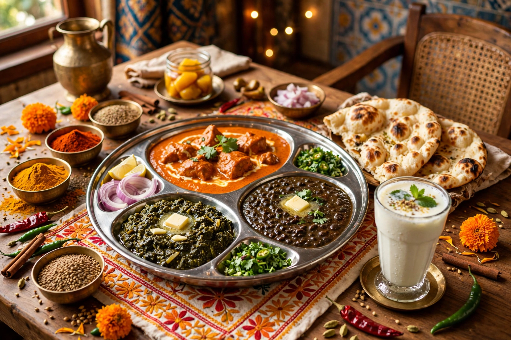

Punjabi cuisine is a culinary style originating in the Punjab, a region in the northern part of South Asia, now divided between Indian Punjab and Pakistani Punjab. It is famed worldwide, notably for rich creamy dishes, tandoori cooking, and breads such as naan and paratha.

Punjab, the "land of five rivers", is fertile agricultural land producing wheat, rice, sugarcane and dairy. Its cuisine reflects Sikh, Hindu and Muslim traditions, Mughlai influences, and the communal langar of Sikhism. The tandoor oven, central to Punjabi cooking, has ancient roots in the region.
Wheat rotis and parathas dominate, alongside rice dishes. Dairy — milk, curd, paneer, lassi and white butter — is abundant. Pulses include chickpeas, black lentils (urad), and kidney beans.
Sarson da saag with makki di roti is the iconic winter dish. Butter chicken (murgh makhani), invented in Delhi by Punjabi restaurateurs, and dal makhani, amritsari kulcha, chole bhature, and tandoori chicken are globally known. Snacks include pakoras and samosas. Sweets include jalebi, pinni, and phirni.
The clay tandoor reaches very high temperatures, baking naan, roti and kulcha in seconds and roasting marinated meats on skewers.